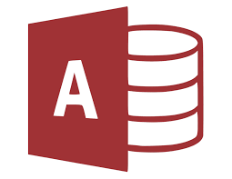
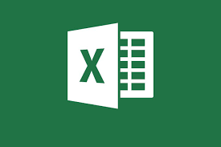

bases de datos
Access es un gestor de datos que utiliza los conceptos de bases de datos relacionales y pueden manejarse por medio de consultas e informes.
Base es un sistema gestor de bases de datos con una amplia gama de características, diseñado para cubrir un amplio abanico de usuarios en el mundo.
hojas de calculo
Originalmente un programa para las hojas de cálculo llamado Multiplan en 1982, pero en los sistemas MS-DOS perdió popularidad frente al Lotus 1-2-3.
Apache OpenOffice Calc es una hoja de cálculo libre y de código abierto compatible con Microsoft Excel que forma parte de la suite ofimática Apache OpenOffice.

procesadores
Microsoft Word es un software de procesamiento de textos. Lo creó Microsoft y está integrado por defecto en el paquete de Microsoft Office. Originalmente, con el sistema operativo DOS, en 1981.

LibreOffice Writer es el componente procesador de texto de código abierto del paquete de software LibreOffice. Writer es similar a Word.